Groove Weld command
Groove Weld command
Constructs a weld between two solid bodies. A groove weld is used to fill gaps between the faces you select. Lofting technology is used to calculate and construct the bead feature.
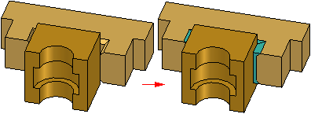
To define a groove weld, you first select a set of base faces (A) and target faces (B ).
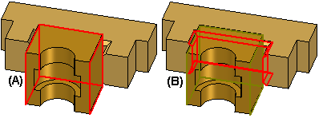
If required by the selected geometry, you may also need to define a set of top (C) and bottom target edges (D).
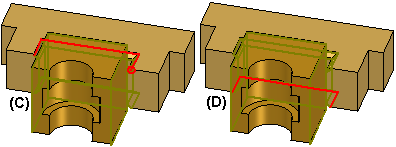
Lofting technology is used to process and calculate the input faces and edges, and then construct the groove weld feature.
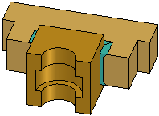
In some cases, you may also need to define a set of base edges.
A groove weld feature is placed using the Bead Material color. You define the Bead Material color using the Weldment Assembly command.
Input requirements
The groove weld feature supports a wide variety of design scenarios. The orientation of the faces to be welded determines what level of input is required. Depending on the design scenario, you will need to define one of the following types of input:
-
Base Faces and Target Faces
-
Base Faces, Target Faces, and Target Edges
-
Base Face, Target Faces, Target Edges, and Base Edges
For simple design scenarios, a set of base faces and target faces provides enough information to construct the feature. For more complex scenarios, you may also need to define target edges and/or base edges.
Output control
You can control the shape and extent of a groove weld feature using the command bar. For example, you can control how the target edges are projected onto the base faces, the extent of the feature, and specify whether the capping faces are planar or constructed using edges of the input faces.
Defining base faces and target faces
For many groove weld features, the only input required is a set of one or more base faces (A) and one or more target faces (B).
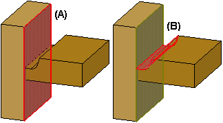
The faces you select are evaluated, and if the top and bottom edges on the target faces can be projected normal to and intersect the base faces, the target edges are determined automatically. You do not have to select target edges, and the Preview button is activated on the command bar.
When you click the Preview button, the groove weld feature is displayed.
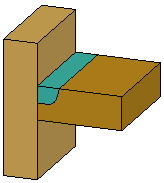
Defining target edges
For some groove welds, you may also need to define a set of target edges. If target edges are required, after you select the base and target faces, the Target Top-Path and Target Bottom-Path options in the Select Target Faces Step are activated.
You can then select edges on the target faces to define the target top-path and target bottom-path. The edges you select are used to define the path for the feature, similar to how a lofted feature is defined. The edges you select must be connected and can be tangent or non-tangent. Only edges that are part of the target face set are valid for selection.
For example, to define the groove weld feature shown, first select the base faces (A) and target faces (B).
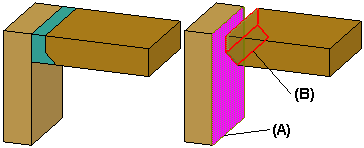
Then select edges on the target faces to define the target top path (C) and target bottom path (D). In this example, no base paths are required. When you click Preview, the feature is constructed.
When you select the target top-path edges, an origin point is displayed at the end of the edge nearest to the cursor. This origin point defines the start end of the groove weld feature.
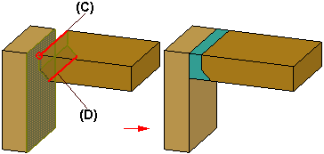
Defining base edges
In some design scenarios, you may need to define base edges. In this example, the target top path edge (A) lies above the base face. Because the target top-path edges do not intersect the base face (B), you will need to define base edges.
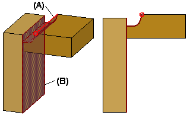
In this type of scenario, after you select the base and target faces, select the target edges, and click Preview, if the feature cannot be constructed a message is displayed, warning you that more input is required.
You can then click the Select Base Faces Step button on the command bar to edit the feature. When the Select Base Faces Step is active, click the Base Top-Path Step button, then select the base top-path edges (A). In most cases, defining the base top-path edges provides the input necessary to construct the feature.
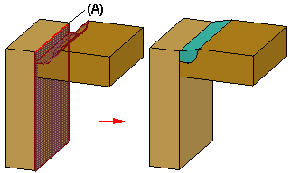
Defining path projection
You can use the Path Projection Step to control how the top and bottom target paths are projected onto the base faces. This allows you to control the shape of the groove weld, and in some cases, setting a different option will ensure that the feature is constructed successfully. You can specify that the groove weld is constructed by projecting the target paths normal to the base face, or by extending the surfaces on the target part. You can also specify that the bottom path method is the same as the top path method.
The following examples illustrate how setting different projection options impact the shape of the groove weld feature:
-
Target Top-Path (A): Normal To Base, Target Bottom Path ( B): Normal To Base. Base Face is (C), Target Face is (D).
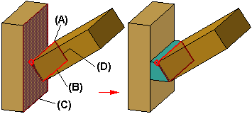
-
Target Top-Path (A): Normal To Base, Target Bottom Path ( B): Extend Surface. Base Face is (C), Target Face is (D).
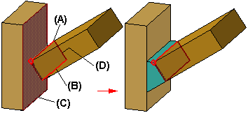
-
Target Top-Path (A): Extend Surface, Target Bottom Path ( B): Extend Surface. Base Face is (C), Target face is (D).
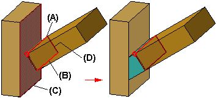
Defining feature extent
You can also specify the extent of a groove weld feature. For example, you may not want the feature to extend the full length of the target edges at one or both ends of the feature.
The Extent Step options allow you to control the offset distance separately for the start end and stop end of the feature. The start and stop ends of the feature are defined by the origin point on the target top-path edges (A).
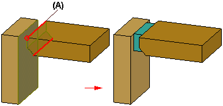
You can offset the planar end caps inward using the options on the command bar. You can type an offset value, or you can offset the end caps in dynamically. To define the planar end caps dynamically, click the End Plane1 or End Plane 2 buttons on the command bar.
A planar face is attached to the cursor, which you can dynamically position along the target path edge, similar to how a reference plane along a curve is constructed. If valid keypoints exist, you can select them to position the capping planes.
Defining capping faces
In the Extent Step, you can also specify how the capping faces at the ends of the groove weld bead are constructed. This can be useful when the two parts have different widths, thicknesses, or shapes, and you want the groove weld to extend to the ends of both parts. To extend the weld to the ends of both parts, you must also define base face paths.
In the following examples, both a base top-path (A) and a base bottom-path (B) are defined. The target top-path and bottom path are (C) and (D), respectively. When you set the Surface option, a surface is constructed by connecting the endpoints and non-target edges of the base and target faces. Depending on the input geometry, the surface can be planar or non-planar.
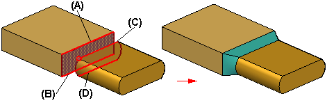
When you set the Plane option, the end caps are planar, and the groove weld bead will extend only to the end of the shortest target path.
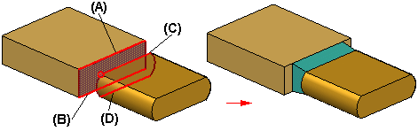
Groove welds and lofted features
The solid geometry for a groove weld feature is constructed using lofted feature technology, where a set of cross sections and guide curves define the shape of a feature. The Groove Weld command automates the inputs to reduce the workload, which eliminates the need to construct cross section and guide curve geometry manually. The faces and edges you select define the shape of the feature.
A basic understanding of lofted feature construction techniques can be helpful in understanding how to best define the inputs for groove weld features. For more information, see the Constructed Lofted Features Help topic.
Extracting weld symbol information onto the drawing
When defining weld features in an assembly, you can use the Groove Weld Options dialog box to define the settings you want for the weld symbol on the drawing. You can define single operation weld symbols, or compound operation weld symbols. When you set the Tie to Geometry option on the Weld Symbol command bar in the Draft environment, you can extract the weld symbol information onto the drawing.
The options you set on the Groove Weld Options dialog box do not influence the shape of the groove weld feature.
You can specify whether weld symbols conform to the ANSI/ISO/DIN standard or the GOST standard using the Drawing Standards page of the Solid Edge Options dialog box.
How do I
Construct a fillet weldConstruct a stitch weld
Construct a groove weld
Label a weld
Insert a weldment in an Assembly
Create a Weldment Assembly
Learn more
WeldmentsCreating drawings of weldment assemblies
Look up more details
Fillet Weld commandFillet Weld command bar
Fillet Weld Options dialog box
Groove Weld command bar
Groove Weld Options dialog box
Label Weld command
Label Weld command bar
Label Weld Options dialog box
Stitch Weld command
Stitch Weld command bar
Stitch Weld Options Dialog Box
Insert Weldment command
Insert Weldment command bar
Weldment Parameters dialog box
Weldment Assembly command
Weldment Assembly Dialog Box
Weldment File Type dialog box